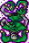
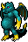

眼球の怪物の召喚 Summon Eyeballs
英語版 CrawlWiki の記事「Summon Eyeballs」(0.34 向け、2026-07-06 版)の翻訳です。原文の著者は編集履歴をご覧ください。
| ガラス化、変身、混乱、変異、分解を引き起こしうる浮遊する眼球の怪物を複数召喚する。 |
眼球の怪物の召喚はモンスター専用の呪文で、次の眼球の怪物を何体か呼び出す[1]。

これらのモンスターが持つ、一筋縄ではいかない厄介な能力をいっぺんにすべて防ぐのはまず無理なので、この呪文はとりわけ危険だ。召喚した本人をできるだけ早く倒して、呼び出された敵を消してしまうべきだ。
眼球の怪物の召喚を唱える敵は次のとおり。
- J 溶解者
- &

ムノレグ


呪文セットによっては、次の敵も眼球の怪物の召喚を唱えることがある。
- &

パンデモニウムの君主(確率2.8%)

変更履歴
出典
- ↑ mon-cast.cc:8202 (0.34.1)